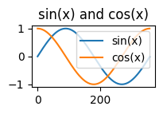

a Dict representing a JSON output element as defined in the notebook file format
Returns
TOutputResult
a result whose type is defined by the implementation (typically a callable that completes any asynchronous processing required)
stream_test_cases = [ {'name': 'Single line ending in a newline','stream_output': {'name': 'stdout','output_type': 'stream','text': ['hello, world\n'], },'expected': dedent("""\ ``` hello, world ``` """ ) }, {'name': 'Single line not ending in a newline','stream_output': {'name': 'stdout','output_type': 'stream','text': ['hello, world'], },'expected': dedent("""\ ``` hello, world ``` """ ) }, {'name': 'Multiline','stream_output': {'name': 'stdout','output_type': 'stream','text': ['hello, world\n', 'a second line\n', 'a third line\n'], },'expected': dedent("""\ ``` hello, world a second line a third line ``` """ ) }]for case in stream_test_cases: name = case['name'] stream_output = case['stream_output'] expected = case['expected'] stream = io.StringIO() output_handler = MarkdownOutputHandler(stream) output_handler.handle_output(stream_output) stream.seek(0) output = stream.read() test_eq(output, expected)print(f"Case: {name}")print(output)
Case: Single line ending in a newline
```
hello, world
```
Case: Single line not ending in a newline
```
hello, world
```
Case: Multiline
```
hello, world
a second line
a third line
```
# Tests for the image case# Load some image data from disk:nbpath = os.path.dirname(os.path.realpath('__file__')) # Get path to this notebookimage_data_b64 = (Path(nbpath) /'../../test_artifacts'/'test_image_base64.txt').read_text()stream = io.StringIO()dummy_filename ='abcdef'completion = emit_image_data(image_data_b64, stream, filename_generator=lambda _: dummy_filename)stream.seek(0)output = stream.read()expected_filename =f'images/{dummy_filename}.png'test_eq(output, f'')with tempfile.TemporaryDirectory() as tmpdir: tmp_path = Path(tmpdir) completion(Path(tmp_path)) test_eq((tmp_path / expected_filename).is_file(), True)print("Displaying file that was written to disk:") display(Image(filename=tmp_path / expected_filename))
Displaying file that was written to disk:

display_data_test_cases = [ {'name': tc['name'],'display_data_output': {'output_type': 'display_data','data': tc['execute_result_output']['data'] },'expected': tc['expected'] } for tc in execution_result_test_cases]for case in display_data_test_cases: name = case['name'] display_data_output = case['display_data_output'] expected = case['expected'] stream = io.StringIO() output_handler = MarkdownOutputHandler(stream) output_handler.handle_output(display_data_output) stream.seek(0) output = stream.read() test_eq(output, expected)print(f"Case: {name}")print(output)